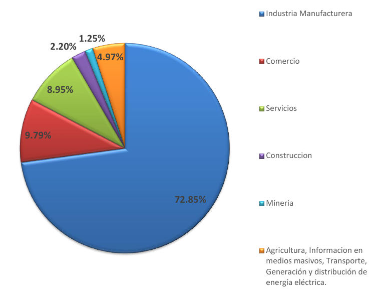
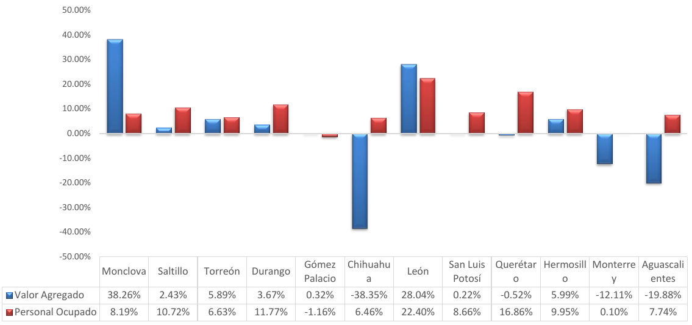

Valor Agregado
Según los resultados de los censos económicos 2014, publicados el 27 de julio, el valor agregado en el municipio de Torreón aumentó 5.62% real en cinco años. Durante el periodo 2008-2013 el valor agregado censal bruto del municipio pasó de $38,974,922 miles de pesos (mdp) a $49,826,440 mdp.
Entre los sectores con mayor crecimiento en el municipio se encuentran los servicios financieros y de seguros, comercio al por menor y al por mayor y los servicios de salud y asistencia social. La industria manufactura, los servicios educativos y los servicios de alojamiento temporal y preparación de alimentos y bebidas se encuentran entre los sectores que presentaron una tasa de crecimiento negativa. Los sectores más representativos se muestran en la siguiente tabla:
Crecimiento por sector del municipio de Torreón
| Sector | Valor agregado censal bruto 2008 en miles de pesos | Valor agregado censal bruto 2013 en miles de pesos | Valor agregado censal bruto 2013 en miles de pesos (pesos constantes de 2008) | % crecimiento 2008/2013 |
|---|---|---|---|---|
| Generación, transmisión y distribución de energía eléctrica, suministro de agua y de gas por ductos al consumidor final | $ 261,467 | $ 298,583 | $ 246,673 | -5.66 % |
| Construcción | $ 1,196,460 | $ 1,199,980 | $ 991,357 | -17.14 % |
| Industrias manufactureras | $ 24,440,187 | $ 29,217,038 | $ 24,137,491 | -1.24 % |
| Comercio al por mayor | $ 1,997,642 | $ 3,034,471 | $ 2,506,911 | 25.49 % |
| Comercio al por menor | $ 2,880,872 | $ 5,305,464 | $ 4,383,079 | 52.14 % |
| Información en medios masivos | $ 341,647 | $ 515,902 | $ 426,210 | 24.75 % |
| Servicios financieros y de seguros | $ 58,643 | $ 155,979 | $ 128,861 | 119.74 % |
| Servicios inmobiliarios y de alquiler de bienes muebles e intangibles | $ 378,249 | $ 389,151 | $ 321,495 | -15.00 % |
| Servicios educativos | $ 992,050 | $ 997,367 | $ 823,969 | -16.94 % |
| Servicios de salud y de asistencia social | $ 403,744 | $ 621,547 | $ 513,488 | 27.18 % |
| Servicios de alojamiento temporal y de preparación de alimentos y bebidas | $ 734,582 | $ 843,606 | $ 696,940 | -5.12 % |
Fuente: INEGI. Censos Económicos 2014. Nota: se utilizó el deflactor base 2008 de acuerdo a INEGI y estimaciones de crecimiento real y nominal del PIB, SHCP.
En promedio, el valor agregado de la Zona Metropolitana de La Laguna decreció en 3.67%, siendo los sectores de construcción, información en medios masivos y generación y transmisión de energía eléctrica y suministro de agua los que sufrieron una mayor disminución. Al igual que en el municipio de Torreón, el comercio al por menor y los servicios financieros y de seguros se encontraron entre los de mayor crecimiento.
Personal Ocupado
Con respecto a los censos económicos de 2009, el personal ocupado de La Zona Metropolitana de La Laguna aumentó 5.85%, mientras en el municipio de Torreón el crecimiento fue de 6.63%. Los sectores con mayor aumento en personal ocupado en la zona metropolitana fueron los siguientes:
| Sector | Personal ocupado total (Censos 2009) | Personal ocupado total (Censos 2014) | Aumento |
|---|---|---|---|
| Corporativos | 775 | 1,452 | 87.35 % |
| Información en medios masivos | 2,653 | 3,880 | 46.25 % |
| Agricultura, cría y explotación de animales, aprovechamiento forestal, pesca y caza (sólo Pesca, Acuicultura y Servicios relacionados con las actividades agropecuarias y forestales) | 163 | 217 | 33.13 % |
| Servicios educativos | 9,787 | 12,446 | 27.17 % |
| Servicios de apoyo a los negocios y manejo de desechos y servicios de remediación | 27,547 | 34,597 | 25.59 % |
Fuente: INEGI. Censos Económicos 2014.
Producción Bruta Total
La estructura en la distribución de la producción bruta de La Laguna no presentó cambios considerables, la industria manufacturera sigue contribuyendo con más del 70% tanto en Torreón como en la zona metropolitana.
Participación sectorial en la producción bruta total de La Laguna

Fuente: INEGI. Censos Económicos 2014.
Otras ciudades de la república
Torreón tuvo un crecimiento mayor al de municipios como Saltillo, Querétaro y San Luis Potosí. Otros municipios como Monclova y León tuvieron tasas considerablemente superiores. No todas las ciudades que mostraron aumentos en el empleo mostraron también aumentos en valor agregado. Monterrey. Chihuahua y San Luis Potosí son ejemplos de esto.

Fuente: INEGI. Censos Económicos 2014. Nota: se utilizó el deflactor base 2008 de acuerdo a INEGI y estimaciones de crecimiento real y nominal del PIB, SHCP.